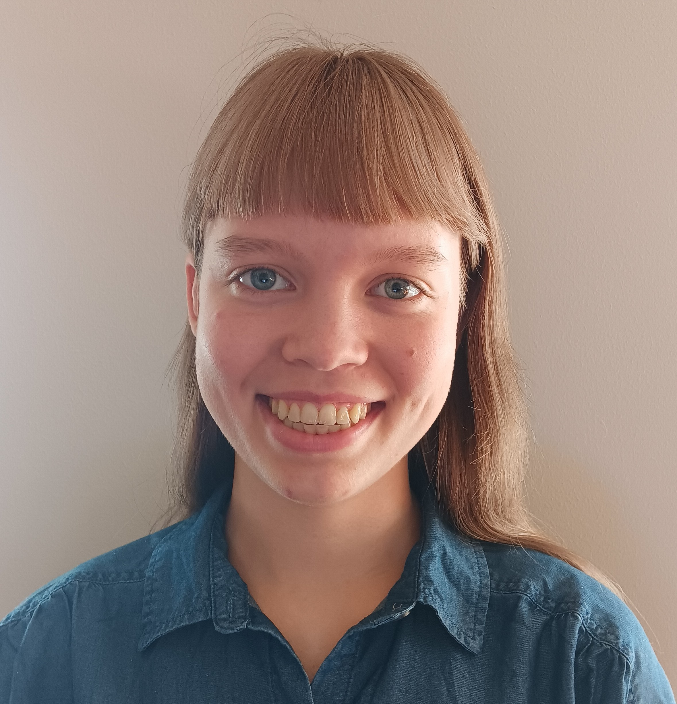
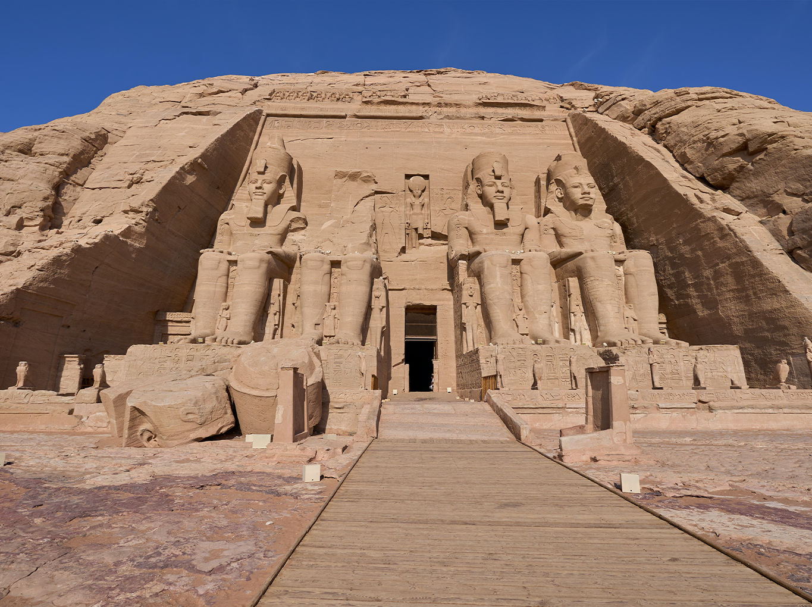
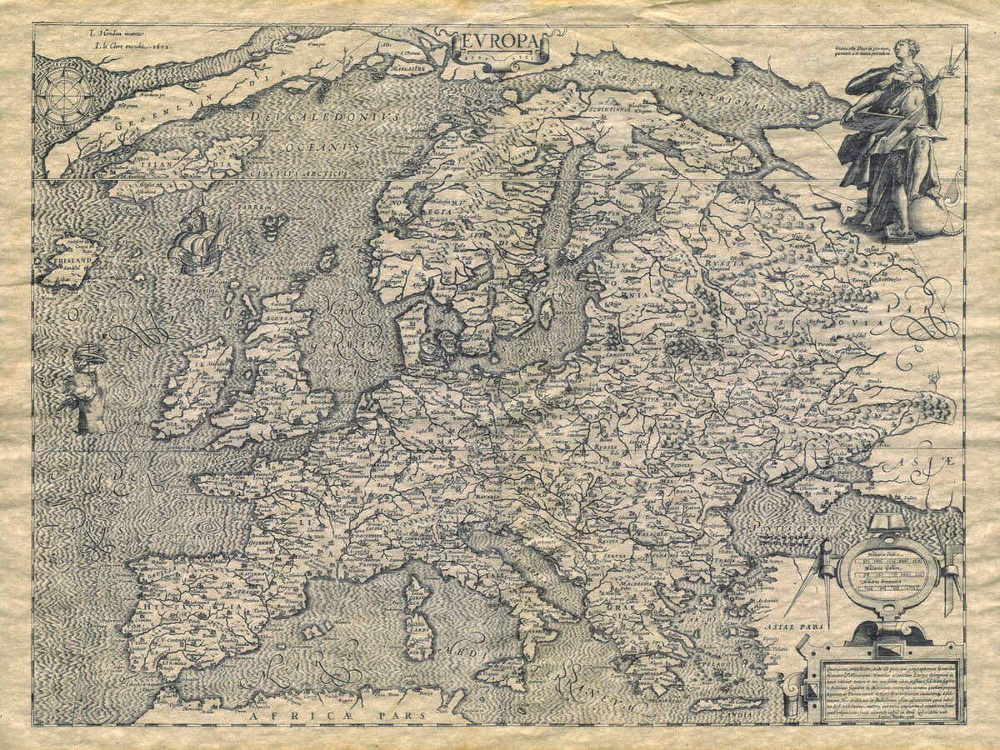

Welcome to My Humanities ePortfolio
My name is Bethany Ball, and I’m a data science student with a strong interest in analytics, visualization, and problem-solving. I’m experienced in tools like R, Python, and SQL, and I enjoy turning complex data into clear, meaningful insights. I’ve worked on projects ranging from statistical analysis to interactive data dashboards, and I’m passionate about using data to make a real-world impact.
Welcome to my HUM 201 ePortfolio, a space where I reflect on the themes, ideas, and personal insights I’ve gained throughout this course. This project goes beyond memorizing historical facts or analyzing ancient texts—it’s about discovering how the stories, philosophies, and artistic expressions of the Ancient and Medieval worlds still shape our modern lives and identities. Through thematic analysis, personal essays, and modern-day connections, I’ve explored not only key civilizations like Egypt, Greece, and Rome, but also what it means to be human across time. This Portfolio is both an academic showcase and a personal journey, revealing how the past informs the present and inspires growth for the future.
Each theme we studied—whether centered on creation myths, heroic journeys, or the struggles between fate and free will—invited me to think critically about the beliefs and values that shaped early societies and continue to echo in our own. I found surprising parallels between ancient narratives and modern experiences, from the search for meaning in chaotic times to the role of community, power, and storytelling. Working on this portfolio has pushed me to ask bigger questions about culture, identity, and how we preserve—or reinterpret—history. It has also deepened my appreciation for the complexity and beauty of human expression across centuries. Ultimately, this collection represents not just my academic learning, but my personal engagement with the timeless human effort to understand the world and our place in it.